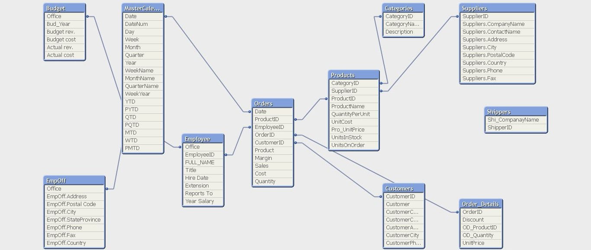
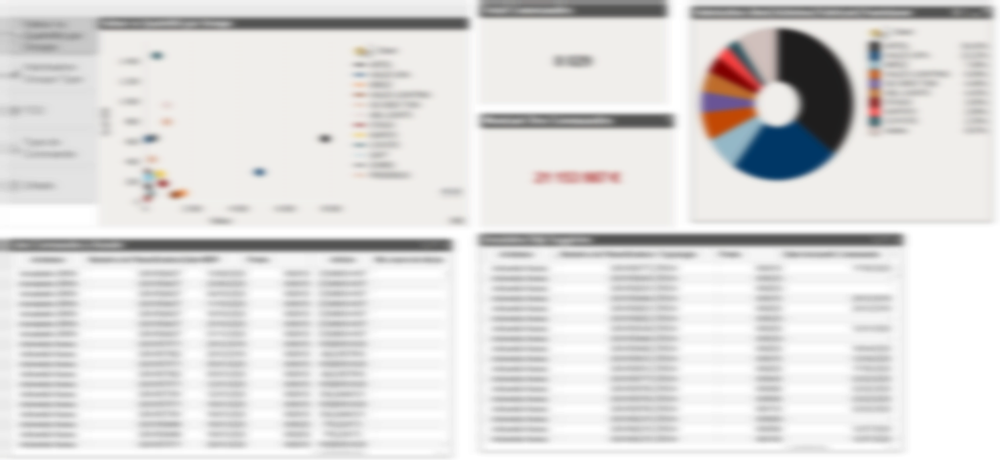

Dashboard Appro
Le projet Dashboard Appro fait partie d'une suite projet BI Supply Chain.
COMMUNICATION GESTION DE PROJET QLIK TECHNIQUE
Le projet
Dashboard Apppro est le nom d’un projet BI (Business Intelligence) réaliser à BMS CIRCUITS, filiale du groupe ALL CIRCUITS lors de mes deux années d’alternance, pour l’obtention de mon titre d’expert en ingénierie logicielle à IN’TECH-SUD.
La business intelligence ou informatique décisionnelle présente un ensemble de techniques d’analyse de données massives et de présentation d’informations par des moyens de tableau de bord.
Le projet fait partie de la suite de projets Supply Chain (chaîne d’approvisionnement) BI ALL CIRCUITS, il offre une suite d’indicateurs aux acheteurs et approvisionneurs du groupe, afin de les aider dans leurs tâches quotidiennes.
Le projet m’a également offert une expérience à l’internationale
Contexte
Le groupe ALL CIRCUITS, l’un des leaders mondiaux de l’EMS (Fabricant de composants électroniques) souhaite consolider l’ensemble de données supply chain de ses filières, pour cela, il dispose d’une infrastructure big data assez importante. À ceci s’ajoute des applications modernes d’analyses de données et rapide tel que Microsoft Power BI et QlikView .
Ces solutions de développement ont la particularité de pouvoir communiquer avec une multitude de bases de données et incorporent un moteur puissant pouvant traiter des millions de données en quelques secondes. Pour le développement de l’application, c’est QlikView qui a été retenu.
Les acheteurs et approvisionneurs du groupe utilisaient un bon nombre de fichiers Excel pour analyser leur travail hebdomadaire pour le suivi des commandes. Pour chaque commande répertorier dans ces mêmes fichiers, il leur a été demander d’aller suivre l’action suggérée par l’ERP (Progiciel de Gestion Intégré) du groupe et ensuite rapporter le résultat à celui-ci.
Ceci posait plusieurs problèmes, entre autre :
- Un temps considérable passé par acheteurs / approvisionneurs pour mettre en place ses propres indicateurs ;
- Pas d’historiques des tâches effectuaient sur les différentes commandes ;
- Une vue globale limitée sur le travail effectuait au niveau des managers ;
- …
L’approvisionnement représentant la plus grosse part des dépenses du groupe, il était donc nécessaire de pouvoir suivre chaque dépense et en même temps pallier les aux surcoûts.
Objectifs
Pour réussir la mission, consolider les données et offrir un espace commun pour le traitement des commandes par le biais de Dashbord, il était important de réaliser les étapes suivantes :
- Analyser l’ensemble des données utilisaient par les acheteurs / approvisionneurs ;
- Analyser les données manquantes ;
- Faire une demande aux responsables ERP de chaque site pour automatiser l’acheminement des données ;
- Créer un data mart pour le stockage de données ;
- Créer un modèle de données ;
- Créer des mesures exploitables pour servir l’application BI ;
- Mettre en place les tableaux de bords ;
- Mettre l’application à disposition des acheteurs / approvisionneurs.
Avec ceci venait s’ajouter des missions d’administrations des principaux serveurs big data.
(Pour plus d’informations voir projet Transition 4.0.)
Ma contribution
Pour accomplir une mission de développement BI dans un domaine en particulier, il est important de pouvoir s’imprégner rapidement le métier. Mes premières semaines post développements étaient principalement orientées apprentissage métier. En effet, elles étaient partagées entre affinage avec la responsable appro et identification de données cibles.
Étant le seul développeur pour les développements de l’application, j’ai dû collaborer avec les services métiers (achat et approvision), de gestion de l’ERP et d’administration BI.
Résultats
#CRÉATION MODEL DE DONNEES

#CRÉATION DU TABLEAU DE BORD

Ce projet a permis aux acheteurs et approvisionneurs de se libérer de multiples fichiers utilisaient toutes les semaines pour effectuer leur travail. En offrant une vue consolidée des commandes, avec une historisation de celles-ci, il est maintenant beaucoup plus facile au manager de suivre l'état des différentes commandes.
Conclusion
Le projet Dashboard Appro m’a permis d’acquérir de nouvelles compétences en technologie Qlik, notamment avec Qlik View. Il m’a aussi permis de voir des techniques avancées de Data Analyst comme la mise en place d’un modèle de données.
Pour le groupe ALL CIRCUITS, cette application et la référence pour le suivi des commandes. Les acheteurs et approvisionneurs ayant accès rapidement aux données souhaitées, ils peuvent désormais faire leur travail rapidement et augmenté d’une manière considérable leur rentabilité.
Personnellement, ce projet et sans aucun doute celui dont j’ai été le plus fier et excité de mener jusqu’au bout, ce que j’ai appris en une phrase “l’informatique décisionnelle et l’informatique qui prépare les meilleurs lendemains”.
Data Mart
Un data mart est un sous ensemble d’entrepôt de données axé sur un domaine en particulier. Il permet de mettre à disposition des données spécifiques à la disposition d’un groupe d’utilisateur bien défini.